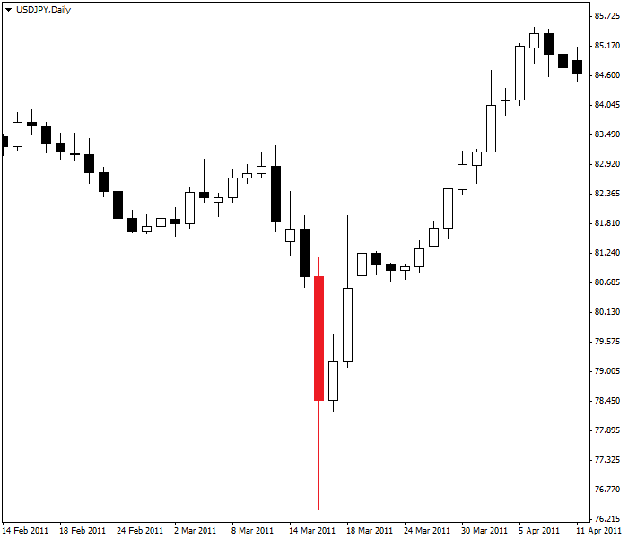
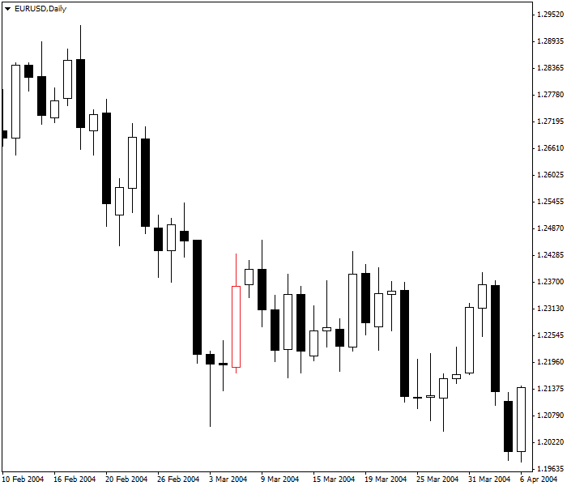

<!DOCTYPE html>
<html>
</html>
<head>
  <meta charset="utf-8">
  <meta http-equiv="X-UA-Compatible" content="IE=edge">
  <title>外汇站（fx-z.com） - 新闻交易</title>
  <meta name="description" content="">
  <meta name="viewport" content="width=device-width, initial-scale=1">
  <meta name="robots" content="all,follow">
  <!-- Bootstrap CSS-->
  <link rel="stylesheet" href="vendor/bootstrap/css/bootstrap.min.css">
  <!-- Font Awesome CSS-->
  <link rel="stylesheet" href="vendor/font-awesome/css/font-awesome.min.css">
  <!-- Google fonts - Roboto-->
  <link rel="stylesheet" href="https://fonts.googleapis.com/css?family=Roboto:400,300,700,400italic">
  <!-- owl carousel-->
  <link rel="stylesheet" href="vendor/owl.carousel/assets/owl.carousel.css">
  <link rel="stylesheet" href="vendor/owl.carousel/assets/owl.theme.default.css">
  <!-- theme stylesheet-->
  <link rel="stylesheet" href="css/style.default.css" id="theme-stylesheet">
  <!-- Custom stylesheet - for your changes-->
  <link rel="stylesheet" href="css/custom.css">
  <!-- Favicon-->
  <link rel="shortcut icon" href="img/favicon.png">
  <!-- Tweaks for older IEs--><!--[if lt IE 9]>
    <script src="https://oss.maxcdn.com/html5shiv/3.7.3/html5shiv.min.js"></script>
    <script src="https://oss.maxcdn.com/respond/1.4.2/respond.min.js"></script><![endif]-->
</head>
<body>
  <div id="all">
    <div class="container-fluid">
      <div class="row row-offcanvas row-offcanvas-left"> 
        <!--   *** SIDEBAR ***-->
        <div id="sidebar" class="col-md-4 col-lg-3 sidebar-offcanvas">
          <div class="sidebar-content">
            <h1 class="sidebar-heading"> <a href="https://fx-z.com">fx-z.com</a></h1>
            <p class="sidebar-p">介绍外汇相关的基本知识，告诉您如何进行自己的技术面和基本面分析，讲解先进的交易理念，并且为您阐述失败交易者与专业交易者之间的真正区别。 </p>
            <p class="sidebar-p">通过这些课程的学习，您将学会如何根据自己的优势来应用情绪分析，还将了解真实世界的事件会对货币汇率产生什么影响，央行在外汇市场中所发挥的作用，以及交易者在颇受欢迎的即期外汇交易中有哪些选择方案。 </p>
            <ul class="sidebar-menu">
                <!-- Link-->
                <li class="sidebar-item"><a href="https://fx-z.com" class="sidebar-link">首页</a></li>
                <!-- Link-->
                <li class="sidebar-item"><a href="cihui.html" class="sidebar-link">外汇词汇</a></li>
                <!-- Link-->
                <li class="sidebar-item"><a href="ebook.html" class="sidebar-link">获取外汇电子书</a></li>
            </ul>
            <p class="social"><a href="https://www.forextimechina.com.cn/zh?form=IZIN" target="_blank"data-animate-hover="pulse" class="external facebook"><i class="fa fa-eur"></i></a><a href="https://www.forextimechina.com.cn/zh?form=IZIN" target="_blank" data-animate-hover="pulse" class="external gplus"><i class="fa fa-gbp"></i></a><a href="https://www.forextimechina.com.cn/zh?form=IZIN" target="_blank" data-animate-hover="pulse" class="external twitter"><i class="fa fa-rmb"></i></a><a href="https://www.forextimechina.com.cn/zh?form=IZIN" target="_blank" title="" class="external instagram"><i class="fa fa-dollar"></i></a><a href="https://www.forextimechina.com.cn/zh?form=IZIN" target="_blank" data-animate-hover="pulse" class="email"><i class="fa fa-money"></i></a></p>
            <div class="copyright text-center text-md-left">
             
              
            </div>
          </div>
        </div>
        <!--   *** SIDEBAR END ***  -->
        <!--   *** DETAIL ***-->
        <div class="col-md-8 col-lg-9 content-column white-background">
          <div class="small-navbar d-flex d-md-none">
            <button type="button" data-toggle="offcanvas" class="btn btn-outline-primary"> <i class="fa fa-align-left mr-2"></i>菜单</button>
            <h1 class="small-navbar-heading"> <a href="https://fx-z.com/12-1.html">下一篇 </a></h1>
          </div>
          <div class="row">
            <div class="col-xl-10">
              <div class="content-column-content">
                <h1>新闻交易</h1>
    <p>
    “新闻”一词是指您首先可能没有注意到的正在发展的事件，虽然，即使新闻事件的走向与预期一致，有些新闻仍会迅速引起市场波动。央行决策及相关事件的新闻（例如关于 G7 峰会非正式会议的评论）将迅速引起市场波动，而其他新闻则更加微妙，需要一定的时间来消化。例如，2009 年底，希腊当时的新任首相 George Papandreou 称，希腊一直未如实报道其预算赤字。这最终导致了周边主权债务危机，但当时无人预见它的严重程度。
</p>
<p>
    新闻包括“预期新闻”和“非预期新闻”，而且这两种类型可以激发短期或长期的交易者行为。通常情况下，预期新闻引起的市场波动小于非预期新闻所引起的波动，但价格行为分析可能变得更加棘手和复杂。
</p>
<p>
    关键问题在于：新闻效果会持续多久。交易学问中提到：“根据传言买入，根据新闻卖出。”这既适用于股市交易，也适用于外汇交易。在股市中，股价将于分析师预计利好盈利时上涨，但一旦盈利公布之后，即使其数据超过预期，股价仍将下跌。外汇中也是如此。货币将在央行公布加息决定之前被买入，但如果央行确实按照预期宣布加息，那么货币将会下跌。这似乎与直觉相反，但它反映出，提前准确建仓的人目前正在获利了结。
</p>
<p>
    因此，您需要在重大新闻事件发生之前绝对相信您的持仓时间。如果您是预期加息前的货币买入者，而且之后央行确实宣布加息，您需要承受货币的后续跌幅，并且需要通过止损定单来适应跌势。
</p>
<p>
    <strong>央行决策和发言</strong>
</p>
<p>
    央行决策的头条新闻，尤其是令人意料的头条新闻，将对市场产生直接的影响。加息、降息幅度以及加息、降息决策可能会让交易者措手不及。有时，央行的主要利率不做任何改变，但相关发言微妙地暗示鸽派或鹰派偏向。量化宽松（QE）等非标准措施同样能引起市场波动。在这种情况下，符合市场预期的决策将被视为“预期新闻”。这种决策引起的市场波动幅度可能比不上意外决策所引起的波动幅度，而意外决策将被视为“非预期新闻”。
</p>
<p>
    如果发言者偏离大众思维，那么央行发言可能引起货币动荡。一个典型示例是德国央行长期坚持的反对欧元区采取 QE 措施的原则。但有一次，德国央行行长 Weidmann 称 QE 可能即将摆上台面，这令人倍感意外；而且，即使交易者一致认为欧洲央行不会参与 QE，欧元仍然随之下跌。无人指责 Weidmann 的口头干预（见下文），但他的发言具有与口头干预相同的效果。Weidmann 的发言为人们对欧元相关风险的整体看法注入了新的不确定性。
</p>
<p>
    当 QE 被欧洲央行正式政策采用后，德国央行恢复了其一贯的反 QE 立场，因此德国央行行长 Weidmann 不再成为“新闻”。然而，2016 年 10 月，一些不知名的数据源告诉媒体，欧洲央行可能会考虑“削减”债券购买计划。即使数据源始终未注明来源且缺乏可信度，欧元仍然迅速下跌。相反，随着后续继续显示低通胀的数据出台，欧洲央行行长 Draghi 开始准备让市场将 QE 原来的截止日期（2017 年 3 月）延长，延长期或许长达 6 个多月。“削减”一词离开舞台且不再被提及。
</p>
<p>
    <strong>干预</strong>
</p>
<p>
    干预是一种特殊的央行行为。央行针对外汇市场主要货币的干预往往非常少，而且过去三十年内对主要货币的干预大部分集中于 USD/JPY。日本央行通常会提前发布一系列提及“过度波动”的警告，即使波动性正常且幅度不强。这被称为“划清界限”，而且外汇交易者经常就这条界限的具体位置进行声势浩大的辩论。随着价格接近最新的共识界限，您发现美元/日元两个方向均出现动荡。
</p>
<p>
    <strong>口头干预</strong>
</p>
<p>
    口头干预是干预的一部分。口头干预是由重要政府人物发表的关于国家货币过于强势的言论，这位政府人物可能是央行行长或财务/财政部长。听众——外汇交易者——往往将“过于强势”解读为政府暗示它即将修改利率或采取其他货币贬值行动。几乎所有情况下，外汇市场都乐于通过卖出货币（至少操作数小时）来顺应这种暗示。2013 年和 2014 年，许多关于 CAD、AUD 和 NZD 的示例显示口头干预达到了预期效果。它对 GBP 和欧元也产生了影响。
</p>
<p>
    口头干预是当天引起外汇市场波动的最重大的新闻事件。它一定能引起外汇价格的波动，即使这些波动仅持续数小时。唯一一件更有影响力的事件是完全出人意料的利率变化，但央行往往会提前做好铺垫，因此这种事件几乎从不发生。历史上确实发生过这种情况，但如今早已不被人关注，因为央行非常在意将预期作为一项核心政策工具来管理。
</p>
<p>
    <strong>地缘政治事件</strong>
</p>
<p>
    进入选举后，市场可能对哪位候选人最适合选举国，或候选人平台将对经济产生哪些影响有一定的见解。如果一位候选人遥遥领先，而且市场尚未对他的胜出过度建仓，那么这可能值得您进行一次货币投机，但如果民意调查显示候选人势均力敌，那么这次可能不值得您冒险。预算谈判或政治丑闻也能引起外汇市场的动荡。
</p>
<p>
    地缘政治事件以及它们对外汇市场的影响已在前一课中详述。
</p>
<p>
    <strong>自然灾害</strong>
</p>
<p>
    自然灾害报道能够迅速影响货币，而且不一定总是预期影响；不过可悲的是，只有那些主要国家受到的自然灾害才能产生影响。2011 年 3 月，日本遭受了地震和海啸的袭击，之后，由于交易者认为修复成本将拉低 GDP，他们预计日元将会走弱。但是，得知保险公司和日本投资者将收回海外资本后，日元反而走强。之后，USD/JPY 继续下跌至 76.00，直到日本央行和其他 G7 央行（根据日本央行的要求）为了让日元贬值而给出干预措施。
</p>
<p>
     此 USD/JPY 图表反映了福岛灾难后日元所遭受的影响。
</p>
<p>
    <strong>评级变化</strong>
</p>
<p>
    主权评级变化可以增强或削弱一个国家的经济前景，并且导致该国货币上涨或下跌。2000 年 3 月，墨西哥从非投资评级升级为投资评级，墨西哥比索稳步吸引了全球投资者的资金流入。2009 年美国金融危机期间，标准普尔 将墨西哥评级下调一级；比索随之下跌，但跌幅并不大，因为其他评级机构（穆迪投资服务和惠誉评级）并未下调墨西哥的评级。2013 年 12 月，标准普尔上调了墨西哥的主权评级。
</p>
<p>
    更令人震惊的评级新闻是，2011 年 8 月，美国评级被标普从 AAA 下调至 AA+。美国股市应声溃败，金价飙升至历史最高位。美元、日元和瑞郎全部因为避险需求而受益。
</p>
<p>
    相反，当信用评级变化与预期一致（例如经济前景被略微下调）时，它对指定货币的积极或消极影响不大。
</p>
<p>
    您可以参考我们外汇新闻部分三家顶级机构做出的评级修改。上面还列出了每种货币的目前评级和前景。
</p>
<p>
    <strong>恐怖主义战争</strong>
</p>
<p>
    2011 年 911 恐怖袭击彻底将市场情绪从积极颠覆为消极，与2003 年伊拉克战争之初如出一辙。9 月 11 号以后，美元继续上涨数天，并于 9 月 18 日到达最高点——它已进入上行走势，而且按照首先的走势来看，恐怖主义袭击似乎没有影响到它。但之后，避险情绪占据上风，美元一直下跌至次年 7 月；此时，交易者已经适应新环境，风险偏好也开始上升。2005 年 7 月，伦敦爆炸案首先对英镑施加了压力，但之后该货币又再度恢复元气。马德里爆炸案（2004 年 3 月 11 日）的影响颇为奇怪——让本已进入跌势的欧元暂停三周。请查阅以下图表。当时，许多分析师认为欧元表现出巨大的弹性。
</p>
<p>
     此 EUR/USD 图表反映了 2004 年马德里爆炸案对欧元（红色蜡烛图）的影响。
</p>
<p>
    这些事件让我们想到，意外的消极事件有时会引起货币下跌，但这不是惯例。在 911 恐怖袭击、伊拉克战争以及更近期的美国经济危机中，美元仍然令人惊讶地保持着良好的价格，至少短期内是如此。在本例中，全区投资者追逐避险需求，而全球最大、最活跃的债券市场——美国债券市场刚好能满足这一要求，尽管美国正是危机的起源。
</p>
<p>
    2009 年底，希腊新任首相 George Papandreou 宣布希腊低估了其预算赤字。EUR/USD 由于德国债券/美国国债的利率差异而自 2009 年 12 月开始保持在 1.5000 以上，但此时它迅速下跌，而且下跌的原因更主要是欧元区经济前景的不确定性以及来自希腊的获利了结压力。希腊问题的实际严重程度对欧元施加了压力，但大多数交易者认为这种跌势不会持久。2009 年年底，欧元低至 1.40 左右；进入 2010 年后，欧元对美元反弹至 1.4500 以上。许多人认为最坏的行情已经结束。然后，随着周边问题的出现，周边效应迅速蔓延，导致葡萄牙、意大利、希腊和西班牙（被称为 PIGS）难以借贷，因而加剧了事情的严重程度。到 2010 年年中，欧元的交易价已低于 1.2000。
</p>
<p>
    正如根据重要的数据交易一样，扎实的背景知识是根据新闻事件交易的关键。交易者需要了解所有重要央行会议的日期，以及央行人员（尤其是央行行长）的发言。交易者不仅应了解一种货币的经济基本面，还应了解该国的政治行情和主权评级——以及任何关于评级变化的警告。
</p>
<p>
    <strong>专业建议：建议您最好不要对预期的重大新闻建仓——请空仓。当实际情况符合预期时，市场可能会给出预期的反应，但这并不是惯例，而且这些事件的影响并不一定持久。如果专业交易者往往在重要新闻发布之间空仓，那么小型散户外汇交易者能有什么更明智的交易决策呢？</strong>
</p>
<p>
    <br/>
</p>
<p>
    <br/>
</p>
              </div>
            </div>
          </div>
        </div>
      </div>
    </div>
  </div>
  <!-- JavaScript files-->
  <script src="vendor/jquery/jquery.min.js"></script>
  <script src="vendor/popper.js/umd/popper.min.js"> </script>
  <script src="vendor/bootstrap/js/bootstrap.min.js"></script>
  <script src="vendor/jquery.cookie/jquery.cookie.js"> </script>
  <script src="vendor/owl.carousel/owl.carousel.min.js"></script>
  <script src="vendor/masonry-layout/masonry.pkgd.min.js"></script>
  <script src="js/front.js"></script>
</body>